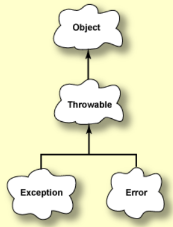
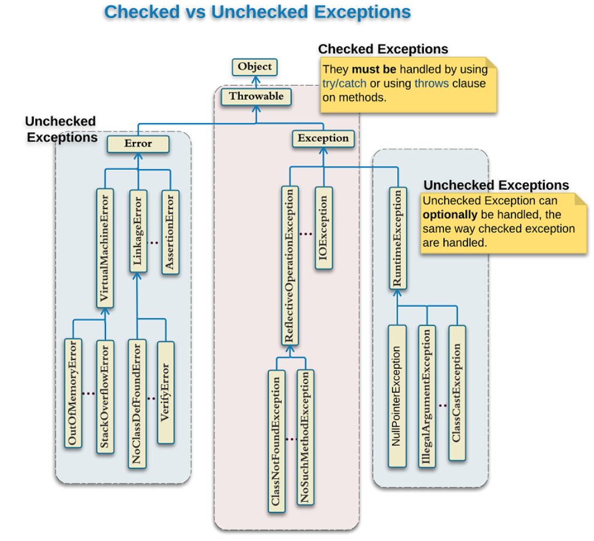

✨ Excepciones en Java
🎯 ¿Qué es una excepción?
Una excepción es un objeto que representa un problema ocurrido durante la ejecución de un programa y que interrumpe el flujo normal de las instrucciones.
En Java, las excepciones permiten:
- detectar errores,
- propagar información sobre el problema,
- y decidir si el programa puede recuperarse o no.
int a = 10;
int b = 0;
int resultado = a / b; // ArithmeticException
🧱 Jerarquía básica de excepciones
La jerarquía principal parte de Throwable:
Throwable
├── Error
└── Exception
└── RuntimeException

🔹 Throwable
Es la superclase de todo lo que puede lanzarse con throw. Se podria capturar en un bloque try-catch, ¡pero nunca se debe hacer!, ya que, no solo capturará todas las excepciones; sino que también hará lo mismo con todos los errores que genere la aplicacion.
🔹 Error
Representa problemas graves del sistema o de la JVM. Normalmente no deben capturarse.
Ejemplos:
OutOfMemoryErrorStackOverflowError
🔹 Exception
Representa situaciones que una aplicación sí puede intentar gestionar. Las excepciones son diferentes de los errores porque se pueden escribir programas para recuperarse de excepciones, pero no se pueden escribir programas para recuperarse de errores.
En Java, hay dos tipos de excepciones:
- Checked exceptions (Excepciones verificadas).
- Unchecked exceptions (Excepciones no verificadas).
✅ Checked exceptions
Las checked exceptions son excepciones que el compilador obliga a tratar.
Si un método puede producir una checked exception, hay dos opciones:
- capturarla con
try-catch - propagarla con
throws
import java.io.IOException;
public static void leerDatos() throws IOException {
// código que puede lanzar IOException
}
🧠 Idea clave
Si no haces nada con una checked exception, el programa no compila.
📌 Ejemplos habituales
IOExceptionSQLExceptionParseException
⚠️ Unchecked exceptions
Las unchecked exceptions no están obligadas a tratarse en compilación.
Suelen indicar:
- errores de programación,
- estados inválidos,
- mal uso de una API,
- o datos incoherentes.
public static void main(String[] args) {
int x = 0;
int y = 10;
int z = y / x; // ArithmeticException
}
El compilador deja compilar el programa, pero el error aparece en tiempo de ejecución.
📌 Ejemplos habituales
ArithmeticExceptionNullPointerExceptionIllegalArgumentExceptionIndexOutOfBoundsExceptionIllegalStateException
🆚 Checked vs Unchecked
| Aspecto | Checked | Unchecked |
|---|---|---|
| ¿Se revisa en compilación? | Sí | No |
| ¿Obliga a capturar o propagar? | Sí | No |
| Uso típico | Recursos externos, operaciones recuperables | Errores de programación o estados inválidos |
| Heredan de | Exception |
RuntimeException |
🧠 Regla práctica
- Usa checked cuando el código cliente puede recuperarse razonablemente.
- Usa unchecked cuando el problema indica uso incorrecto del código o un estado inválido.

🛠️ try, catch y finally
🔹 try
Contiene el código que puede lanzar una excepción.
🔹 catch
Captura y trata la excepción.
🔹 finally
Se ejecuta siempre, tanto si hay excepción como si no. Suele usarse para liberar recursos.
try {
int[] numeros = {1, 2, 3};
System.out.println(numeros[5]);
} catch (ArrayIndexOutOfBoundsException e) {
System.out.println("Índice fuera de rango");
} finally {
System.out.println("Fin del bloque");
}
🧰 try-with-resources
Cuando trabajamos con recursos como ficheros, streams o conexiones, Java permite cerrarlos automáticamente con try-with-resources.
import java.io.BufferedReader;
import java.io.FileReader;
import java.io.IOException;
public static void leerFichero(String ruta) {
try (BufferedReader br = new BufferedReader(new FileReader(ruta))) {
System.out.println(br.readLine());
} catch (IOException e) {
System.out.println("Error al leer el fichero: " + e.getMessage());
}
}
✅ Ventajas
- código más limpio,
- cierre automático del recurso,
- menos riesgo de fugas de recursos.
🎯 throw vs throws
Es muy habitual que el alumnado los confunda.
🔹 throw
Se usa para lanzar una excepción concreta.
throw new IllegalArgumentException("La edad no puede ser negativa");
🔹 throws
Se usa en la firma del método para indicar que puede propagarse una excepción.
public void guardar() throws IOException {
// ...
}
🧪 Captura múltiple (multi-catch)
Si varias excepciones se tratan igual, pueden agruparse en un mismo catch.
try {
Integer.parseInt("hola");
} catch (NumberFormatException | NullPointerException e) {
System.out.println("Dato no válido");
}
Esto evita repetir código innecesario.
📍 Orden de los catch
Los catch deben colocarse de la excepción más específica a la más general.
✅ Correcto:
try {
// ...
} catch (NumberFormatException e) {
System.out.println("Formato incorrecto");
} catch (RuntimeException e) {
System.out.println("Error en tiempo de ejecución");
}
❌ Incorrecto:
try {
// ...
} catch (RuntimeException e) {
System.out.println("Error general");
} catch (NumberFormatException e) { // nunca se alcanzará
System.out.println("Formato incorrecto");
}
🚫 ¿Hay que capturar siempre las excepciones?
No.
Capturar por capturar es una mala práctica.
try {
// código
} catch (Exception e) {
}
Ese patrón es peligroso porque:
- oculta errores,
- dificulta depurar,
- y hace que el programa falle de forma silenciosa.
✅ Mejor
- capturar lo que realmente puedas tratar,
- propagar lo que no puedas resolver,
- y dar mensajes útiles.
🧾 Métodos útiles de las excepciones
Cuando capturas una excepción, tienes herramientas útiles para depurar:
try {
Integer.parseInt("abc");
} catch (NumberFormatException e) {
System.out.println(e.getMessage());
System.out.println(e.getClass().getSimpleName());
e.printStackTrace();
}
Métodos frecuentes
getMessage()→ devuelve el mensaje asociadogetClass()→ permite ver el tipo concretoprintStackTrace()→ muestra la traza completagetCause()→ devuelve la causa original si existe
🧩 Excepciones personalizadas
Aunque las excepciones de Java cubren casi todas las excepciones generales que están obligadas a ocurrir en la programación, a veces, necesitamos complementar estas excepciones estándar con las nuestras.
En esos casos podemos crear nuestras propias excepciones.
📌 ¿Cuándo tiene sentido crear una?
- cuando el error pertenece a la lógica de tu aplicación,
- cuando quieres dar un mensaje más claro,
- cuando necesitas distinguir un caso concreto de negocio,
- cuando quieres encapsular otra excepción con más contexto, o
- cuando quieres añadir nuevos métodos o atributos que no son parte de las excepciones estándar.
🏗️ Cómo crear una excepción personalizada checked
Pasos para implementar una excepción personalizada
- Debemos extender de la clase
java.lang.Exception. - Se debe proporcionar un constructor que establezca la excepción causante y brinde un beneficio en comparación con las excepciones estándar disponibles.
public class ReservaException extends Exception {
private final int codigoReserva;
public ReservaException(String message, int codigoReserva) {
super(message);
this.codigoReserva = codigoReserva;
}
public int getCodigoReserva() {
return codigoReserva;
}
}
Uso
public void reservar(int plazas) throws ReservaException {
if (plazas <= 0) {
throw new ReservaException("Las plazas deben ser mayores que 0", this.codigo);
}
...
}
⚡ Cómo crear una excepción personalizada unchecked
Los pasos son iguales que las checked pero exteniendo de la clase RuntimeException:
public class EdadInvalidaException extends RuntimeException {
public EdadInvalidaException(String message) {
super(message);
}
public EdadInvalidaException(String message, Throwable cause) {
super(message, cause);
}
}
Uso
public void setEdad(int edad) {
if (edad < 0) {
throw new EdadInvalidaException("La edad no puede ser negativa");
}
}
🧠 ¿Extiendo de Exception o de RuntimeException?
Extiende de Exception si...
- quieres obligar al cliente a tratar el problema,
- el error puede recuperarse,
- el problema puede pasar, y quiero gestionarlo,
- o la operación depende de algo externo.
Extiende de RuntimeException si...
- no debería ocurrir si el código está bien hecho,
- no tiene mucho sentido obligar a capturarlo
- representa un fallo de programación,
- o se trata de un estado inválido del objeto.
🪜 Encadenamiento de excepciones
Muchas veces capturamos una excepción y queremos lanzar otra más expresiva, sin perder la causa original.
public void cargarUsuario(String id) throws ReservaException {
try {
Integer.parseInt(id);
} catch (NumberFormatException e) {
throw new ReservaException("El id del usuario no es numérico", e);
}
}
Esto es muy importante porque permite:
- dar un mensaje de negocio más claro,
- mantener la causa real,
- y facilitar la depuración.
🧼 Buenas prácticas con excepciones
✅ 1. Usa excepciones estándar cuando ya encajen
No crees una excepción personalizada, si no puede proporcionar ningún beneficio. Para ello, es mejor que uses IllegalArgumentException o IllegalStateException, que ya describen bien el problema y son conocidas por los desarrolladores.
✅ 2. No captures Throwable
Capturaría también errores graves del sistema.
✅ 3. No captures Exception salvo que tengas un motivo claro
Es demasiado general y puede ocultar problemas importantes.
✅ 4. Escribe mensajes útiles
Mal:
throw new RuntimeException("Error");
Mejor:
throw new IllegalArgumentException("El precio no puede ser negativo");
✅ 5. No uses excepciones para controlar el flujo normal
Mal enfoque:
try {
int valor = Integer.parseInt(texto);
} catch (NumberFormatException e) {
valor = 0;
}
Si el caso es esperable, muchas veces conviene validar antes.
✅ 6. Mantén la causa original cuando relances
Usa el constructor con cause siempre que aporte contexto.
✅ 7. Crea excepciones de dominio cuando aporten claridad
Cuando obsevamos las clases de excepción proporcionadas por el JDK, rápidamente nos damos cuenta que todos sus nombres terminan con Exception. Esta convención de nomenclatura general se utiliza en todo el sistema de Java.
Por ejemplo:
ReservaCompletaExceptionSaldoInsuficienteExceptionAlumnoDuplicadoException
🧱 Excepciones y diseño orientado a objetos
Las excepciones también forman parte del diseño de una API. No son solo “errores”, sino una forma de expresar contratos y reglas.
Por ejemplo:
public class CuentaBancaria {
private double saldo;
public void retirar(double cantidad) {
if (cantidad <= 0) {
throw new IllegalArgumentException("La cantidad debe ser positiva");
}
if (cantidad > saldo) {
throw new IllegalStateException("Saldo insuficiente");
}
saldo -= cantidad;
}
}
Aquí las excepciones ayudan a proteger el estado del objeto.
🧭 Excepciones y SOLID
Aunque SOLID no trata solo de excepciones, sí tiene relación con cómo las diseñamos.
🔹 S — Single Responsibility Principle
Una clase no debería mezclar lógica de negocio con una gestión caótica de errores. Cada parte debe tener una responsabilidad clara.
🔹 O — Open/Closed Principle
Podemos ampliar el comportamiento creando nuevas excepciones de dominio sin reescribir media aplicación.
🔹 L — Liskov Substitution Principle
Las subclases no deberían romper las expectativas del contrato lanzando excepciones incoherentes o más amplias de forma injustificada.
🔹 I — Interface Segregation Principle
Las interfaces no deben obligar a clientes a tratar excepciones que no tienen sentido para su uso.
🔹 D — Dependency Inversion Principle
La lógica de alto nivel puede depender de abstracciones y traducir excepciones técnicas a excepciones de dominio más expresivas.
🧠 Idea práctica
En una buena arquitectura:
- la capa de acceso a datos puede lanzar excepciones técnicas,
- la capa de servicio puede transformarlas en excepciones de negocio,
- y la capa de presentación puede mostrar mensajes adecuados.
🧪 Ejemplo completo
public class StockInsuficienteException extends Exception {
public StockInsuficienteException(String message) {
super(message);
}
}
public class Producto {
private String nombre;
private int stock;
public Producto(String nombre, int stock) {
if (nombre == null || nombre.isBlank()) {
throw new IllegalArgumentException("El nombre no puede estar vacío");
}
if (stock < 0) {
throw new IllegalArgumentException("El stock no puede ser negativo");
}
this.nombre = nombre;
this.stock = stock;
}
public void vender(int cantidad) throws StockInsuficienteException {
if (cantidad <= 0) {
throw new IllegalArgumentException("La cantidad debe ser mayor que 0");
}
if (cantidad > stock) {
throw new StockInsuficienteException(
"No hay stock suficiente de " + nombre + ". Stock actual: " + stock
);
}
stock -= cantidad;
}
}
public class Main {
public static void main(String[] args) {
Producto p = new Producto("Teclado", 3);
try {
p.vender(5);
} catch (StockInsuficienteException e) {
System.out.println("Error de negocio: " + e.getMessage());
} catch (IllegalArgumentException e) {
System.out.println("Error de validación: " + e.getMessage());
}
}
}
❌ Errores frecuentes
- confundir
throwconthrows - pensar que todas las excepciones deben capturarse
- usar
catch (Exception e)para todo - lanzar
RuntimeExceptionsin mensaje claro - crear excepciones personalizadas innecesarias
- olvidar pasar la causa original
- usar excepciones donde bastaba una validación previa
📝 Resumen final
Qué debes recordar
- Las excepciones permiten gestionar errores de forma controlada.
Throwablees la raíz de la jerarquía.Errorno suele capturarse.- Las checked obligan a capturar o propagar.
- Las unchecked suelen reflejar errores de programación o estados inválidos.
throwlanza una excepción ythrowsla declara.- Una excepción personalizada debe aportar claridad real.
- Las excepciones también forman parte del diseño de una buena API.
- SOLID ayuda a diseñar código donde los errores se gestionan con sentido y sin mezclar responsabilidades.
💬 Mini guía
Qué usar normalmente
IllegalArgumentException→ argumento inválidoIllegalStateException→ estado del objeto no válido- checked personalizada → problema de negocio recuperable
- unchecked personalizada → incumplimiento claro de reglas o precondiciones